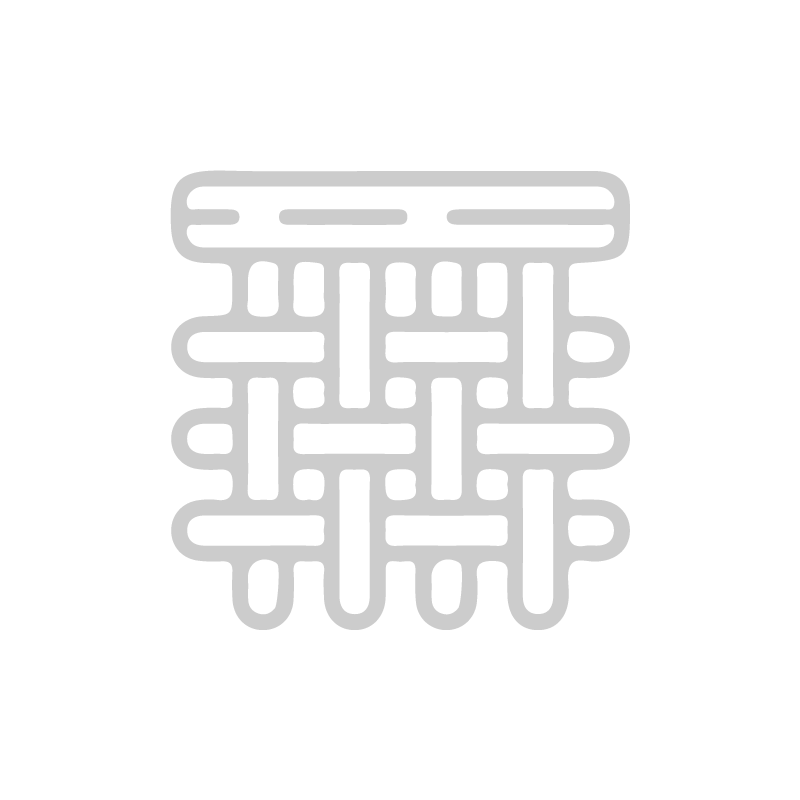
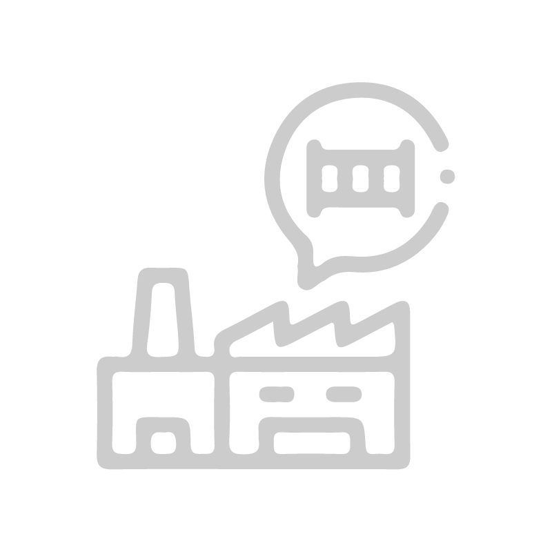
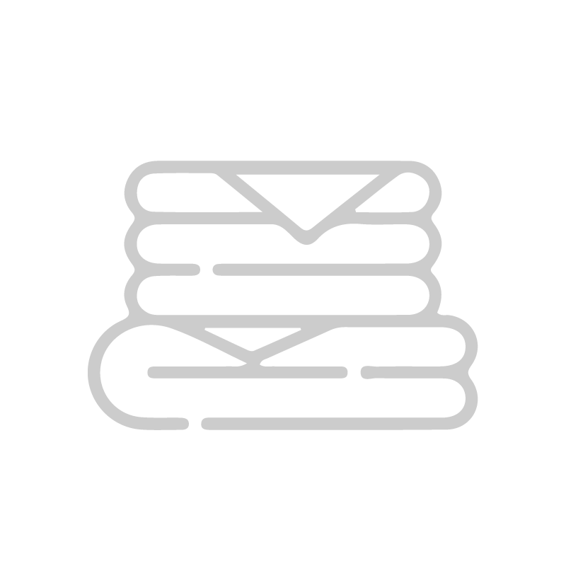

Tejido
Estructura estable en algodón-poliéster.
- Algodón-poliéster
- Densidad a medida
Tejido circular con hilos preteñidos, para tu marca y tus uniformes.
Sobre ROMELL TEXTIL
Tejemos en Puebla telas de punto para que tu marca vista mejor.
Conoce nuestra historia
Estructura estable en algodón-poliéster.

Suave y cómoda desde la primera puesta.

Vello uniforme para sudaderas cálidas.

Ingeniería textil poblana, control técnico y menor huella hídrica en cada rollo.
Acerca de nosotros
Te asesoramos en tela, color y cantidad en el mismo chat.